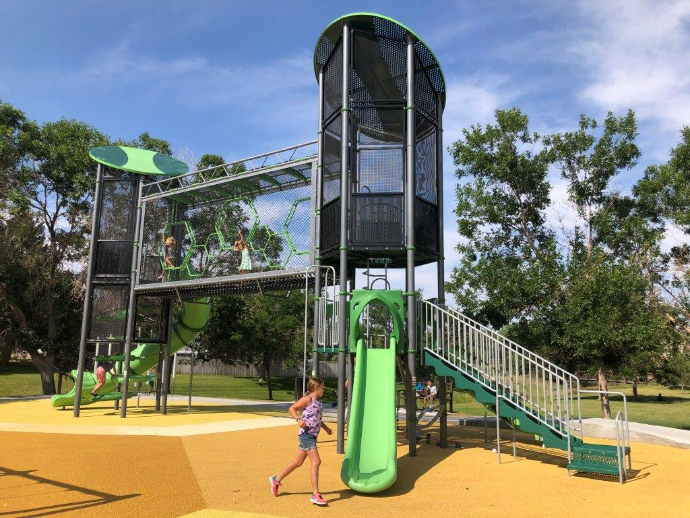
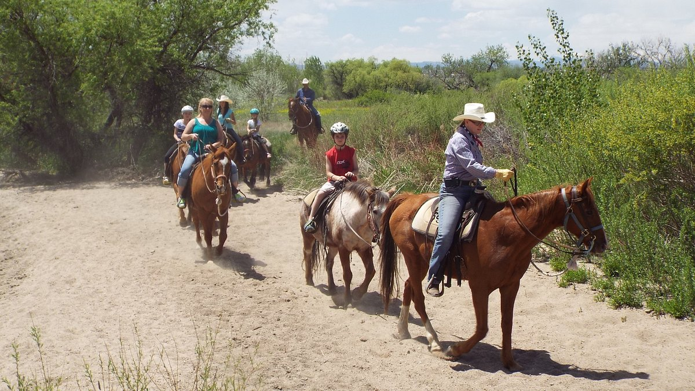

Southlands Mall
Instead of going to indoor mall why not come here to a outdoor mall with a movie thearter, stores and restaurant of different kinds, with 189 numbers of stores and services here at Southlands Mall.

Playground and Parks
Aurora has many different parks that are not only at schools but also in different neighborhoods, The picture here was taken from Hampden Hills Park that is in Aurora Colorado, There are different parks from all different shapes and sizes and also if you play Pokemon GO!

12 Miles stables
If you are a outdoors person and like to walk or ride though nature maksure to check this out and enjoy nature then check out the horse riding.